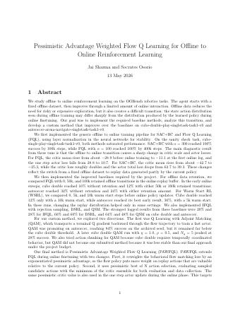
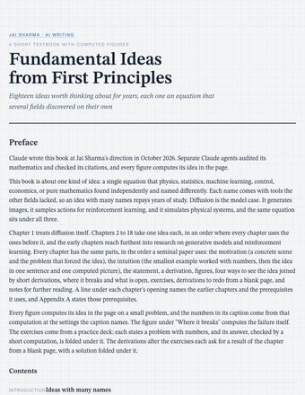
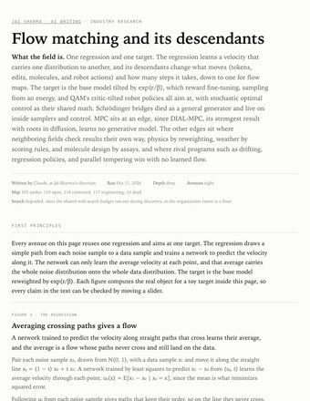

Jai Sharma
M.E.T., EECS + Business, UC Berkeley
I am an undergraduate researcher at Berkeley AI Research, advised by Prof. Dawn Song, where I work on the mathematics of discrete diffusion models.

News
- Oct 2026Started an AI writing section for work Claude writes at my direction, beginning with an eighteen-chapter textbook and a map of flow matching.
- Oct 2026My writing now reads on this site, with interactive figures that compute each mechanism it derives.
- Sep 2026Released dexter, an open source agent workspace for Claude Code.
- Aug 2026Joined Narada AI as an AI Researcher.
- May 2026Started at Databricks as a PhD level Data Science Intern.
- Mar 2026Presented a compute exchange for GPUs to the New York Stock Exchange.
- Jan 2026Posted Neural Estimation of Pairwise Mutual Information in Masked Discrete Sequence Models to arXiv.
- Oct 2025Started writing Diffusion from First Principles.
- Sep 2025Joined Prof. Dawn Song's group at Berkeley AI Research.
- Aug 2025Won first place out of over 300 participants at the internal R&D hackathon at Palo Alto Networks.
Research
An asterisk denotes equal contribution.
Diffusion models
-

Preprint, 2026
Reverse generation is the process of finding a prompt that maximizes the probability of a specific target response, and it is one of the main strategies for red teaming a language model. Autoregressive models struggle with it because they generate sequentially. Diffusion language models can generate in arbitrary orders, so we treat the problem as a completion task in which the prompt tokens are masked. Applying Bayes' Theorem to the diffusion objective gives a sampling strategy that maximizes the divergence between the conditional and unconditional distributions, which provides a formal link between reverse generation and classifier free guidance. We extend this into a Dynamic Diffusion Attack that folds a history of successful jailbreaks and failed refusals back into the guidance objective. With LLaDA 8B Instruct as both investigator and target, it reaches a 92.86% attack success rate on AdvBench harmful strings.
-

Neural Estimation of Pairwise Mutual Information in Masked Discrete Sequence Models
Preprint, 2026 · arXiv:2605.20187
Masked diffusion models expose marginal conditional distributions, but they do not explicitly represent which variables depend on each other. We estimate the full pairwise mutual information matrix directly from the hidden states of a pretrained model, supervised by ground truth MI computed from the model's own conditional distributions. The estimator predicts the whole matrix in a single forward pass, which lets us identify conditionally independent subsets of variables and decode them in parallel. On Sudoku and on protein sequence generation with ESM-C, the MI maps recover known structural constraints and reduce inference time forward passes by 3 to 5 times while preserving generative quality and outperforming entropy based parallelization.
Reinforcement learning and robotics
-

Pessimistic Advantage Weighted Flow Q Learning for Offline to Online Reinforcement Learning
Technical report, 2026
An agent starts from a fixed offline dataset and then improves through limited online interaction. Offline data avoids risky exploration, but it creates a hard transition, because the state action distribution seen during offline training differs from the one the learned policy produces online. We diagnose that transition on the OGBench robotics tasks, then propose PAWFQL, which extends Flow Q Learning by reweighting the behavioral flow matching loss with an exponentiated pessimistic advantage and by selecting actions with pessimistic best of N against the minimum of the critic ensemble. We also explored Q Learning with Adjoint Matching, which reached 84% success on antsoccer by transporting a terminal Q gradient backward through the flow trajectory.
- Robotics
- Flow matching
-
MMRC
MMRC: Multimodal Reasoning and Critique for Web Navigation
2024. Included in UC Berkeley EECS Technical Report UCB/EECS-2024-167.
Scaling training alone plateaus on web navigation, so we asked how to apply actor critic methods instead. We built reinforcement learning methods to automate hundreds of tasks on live sites such as Reddit and ecommerce pages, and finetuned a small critic model to improve the zero shot performance of multimodal LLMs on VisualWebArena, a dataset of over 70 GB.
- Slides
- Tech report
- Agents
Biology
-

Clinical Immunology (Elsevier), vol. 244, 2022
This study examines the role of mast cells in osteoarthritis. Single cell and bulk RNA-Seq of synovial tissue identify prototypical mast cell markers, and a marker expression score classifies 40 patients into mast cell high, medium and low synovial pathotypes. Treating mice with a histamine H1 receptor antagonist attenuates disease. I conducted the biostatistical analysis of the mRNA-seq data, which covered over 40,000 genes and 1,000 samples.
Earlier work
- A Deep Learning Ensemble Framework for Off-Nadir Geocentric Pose Prediction, IEEE PRAI. A U-Net predicts elevation masks that are concatenated back onto the RGB image for pose regression, reaching an R² of 0.917. Code. 2022
- Leveraging Machine Learning and Model-Agnostic Explanations to Understand Automated Diagnosis of Cardiovascular Disease, IEEE IBIOMED. An MLP diagnoses cardiovascular disease with an F1 score of 0.897, and LIME is used to understand which features drive the diagnosis. Code. 2022
- An RNA Sequencing Analysis of Glaucoma Genesis in Mice, with Vidhyacharan Bhaskar, arXiv. Differential expression and gene ontology analyses of optic nerve head and retina RNA-seq data compare mice with severe glaucoma against several control groups. Code. 2022
- Investigating the Relationship Between Dropout Regularization and Model Complexity in Neural Networks, with Christopher Sun and Milind Maiti, arXiv. Training 2,000 networks on each of three data sets, with random dropout rates and layer widths, shows that a wider layer with more dropout does not always perform better. 2021
Patents 3
-
System for Adversarial Reinforcement of an LLM Firewall
Palo Alto Networks. A method for hardening an LLM firewall by training adversarial models against it. The adversarial models use gradient suffix attacks, reinforcement learning and agentic attacks, so that the firewall learns to detect attack classes it has not encountered before. Disclosure 09/2025 -
User-Context Guided Agentic AI System for Binary File Reverse Engineering
Palo Alto Networks. An agentic system for reverse engineering binary files, in which an orchestrator decomposes the task into subtasks and delegates them to subagents guided by user context. Filed 12/2025 -
Systems and Methods for Multimodal Biological Data Translation and Embedding Representations
First author, filed through my startup. CycleGAN can translate between modalities but does not account for the fact that the modalities come from the same patient. CLIP learns shared representations for paired data yet cannot decode an embedding back to the input features. This invention learns a shared latent space across multi-omics, radiology imaging, cellular imaging, clinical tabular and EHR data without requiring outcome labels, and its embeddings can be decoded back to interpretable biological features. That decoding is what makes compound biomarkers discoverable. Provisional 10/2024
Writing Read online
-

Diffusion from First Principles
Book, in progress, 2025
The purpose of this text is to introduce diffusion in machine learning from first principles. Diffusion is a physical term before it is a machine learning one, so the book builds up the forward SDE, the Fokker-Planck equation, the reverse SDE, the Boltzmann distribution, the Einstein-Stokes relation, Langevin sampling, and the fluctuation-dissipation theorem.
-

Book, ISBN 979-8767404476, 2021
An introductory text on deep learning. It starts with linear and logistic regression and builds up to neural networks, developing the linear algebra and calculus needed to derive the parameter updates along the way, then implementing everything from scratch in Python. It is accompanied by a 26 part video lecture series and a code repository.
-

A Provider's Perspective of a Compute Exchange
White paper and team presentation to the New York Stock Exchange, 2026
AI compute is scarce and intrinsically valuable, but a lack of standardization and divisibility keeps it from being traded the way oil and gold are. The white paper models GPU resource allocation from a provider's point of view, covering price modeling with gamma distributions, the sampling rate of resource utilization, energy cost coupling, and a correlation metric for a tokens market.
AI writing
-

Fundamental Ideas from First Principles
Textbook written by Claude at my direction, 2026
Eighteen ideas that several fields found on their own, from diffusion, the tilt and change of measure to optimal transport, information theory, kernels, martingales and optimal control. Each chapter opens on a concrete scene and a small example worked with numbers, then states and derives the idea step by step, computes it in interactive figures, shows it four ways, and computes where it breaks. Separate Claude agents audited the mathematics and checked every citation.
- Read online
- Textbook
-

Flow matching and its descendants
Field report written by Claude at my direction, 2026
A map of flow matching and what grew from it, as of October 2026: the regression and the reward tilt that every branch shares, built up in figures that compute them, the key papers one by one, 345 sub-problems marked open, contested or engineering, a reading order, and the labs, startups and investors working on it.
- Read online
- Field report
Building
-
dexter
dexter, a personal agent workspace
Open source, 2026
I run my own work through an agent I built on Claude Code, and dexter is its open source version. Its skills, rules, memory and a queue of deferred work are plain files in one folder, so a correction made once becomes a lesson that every later run of that skill reads first. One hook logs every prompt and tool call and holds sends and pushes for approval, and the same folder can run as a bot in a Discord server.
- Code
- Agents
-
Läsa
Side project, 2026
Kindle and Apple Books already record how far you are in every book. Läsa turns each rise in the percent read into a reading session and puts the sessions in a feed with kudos, streaks and a leaderboard for every book. A Kindle data export backfills every past session.
-
Stealth
Stealth startup
Co-founder and Chief AI Officer, NVIDIA Inception, 2024 to 2025
I co-founded a startup building foundation models for multimodal biological data. We trained several autoencoders simultaneously, one per modality, each minimizing its own reconstruction loss while also minimizing the distance between the embeddings of the same patient across modalities. Cross modality cosine similarity exceeded 0.99. Because the modalities share a latent space, we could translate one into another. At inference time, using only mRNA data (2.0% of all raw features) retained 92% of model performance, using only methylation (2.9%) retained 85%, and using only microRNA (0.3%) retained 88%. We also ran a pilot on reverse engineering the probability of technical success in clinical trials, and our findings were validated by domain experts.
- Patent
- Multimodal representation learning
-
LLM
FirewallAdversarial red teaming of an LLM firewall
Palo Alto Networks, PhD level AI Research Intern, 2025
I researched LLM red teaming strategies for AI safety and built adversarial training for an LLM firewall. The training used adversarial models driven by gradient suffix attacks and by reinforcement learning, and it increased prompt injection detection coverage on new attack classes by 50%. The internship led to two patents, one filed and one disclosed, and won first place out of over 300 participants at the internal R&D hackathon.
- LLM security
- 2 patents
How I use AI Full account
I work through Claude Code, running in one folder of plain files that holds its skills, its rules, its memory and a queue of deferred work. I reach it from a terminal, from the Claude desktop app, and from my phone through a Discord server of my own, and it runs on a laptop and a desktop at home that stays on. dexter is the public build of that folder.
The agent can read whatever I give it access to, but no email, message, post or form submission leaves until I approve it. One hook in Claude Code's user settings logs every prompt and tool call, and it holds a message to someone else, a push to dexter or an edit to itself until I say yes. Drafts pass two gates before I see them: one checks that the text matches what is attached, and one reads how the person's own page asks to be contacted and checks that every fact about them has a source.
I steer it with short rule files I attach to a message, with skills that write down each correction in the run that earned it, and with a board where dragging a card changes what the next session takes. I use it to map research fields, to write textbooks whose figures compute what they show, to build practice decks whose answers a script runs, and to fill in applications, which stop at the Submit button by default. The full account covers each mechanism and links its file in dexter.
Experience
- Narada AI, AI Researcher, with Amir Gholami, Kurt Keutzer and Dave Park. I work on document extraction, and I built the synthetic document generator the team benchmarks extraction models on.2026 to now
- Databricks, PhD level Data Science Intern. I built agentic workflows to automate quantitative finance analysis, and improved the modeling of holiday effects by 20% for forecasts.2026
- Palo Alto Networks, PhD level AI Research Intern, under Billy Hewlett.2025
- Stealth startup, Co-founder and Chief AI Officer.2024 to 2025
- MultiOn AI, Machine Learning Engineer for LLM Evaluation. I built the backend evaluation pipeline that benchmarks over 10 LLM agents across more than 1,000 web navigation tasks, and filtered noisy human annotations into discrete action signals for offline evaluation.2024
- IBM Research and the MIT-IBM Watson AI Lab, Machine Learning Researcher for Meta Learning. I investigated zero shot transfer of LoRA finetuning hyperparameters between 7B models across over 1,000 natural instruction tasks, using Bayesian optimization with a statistical prior.2024
- Synkrino Biotherapeutics, Machine Learning Engineer for Drug Discovery. I accelerated drug target discovery report generation by 3 times with a generative copilot trained on hundreds of NCBI pages.2024
- Anaflash, Machine Learning Engineer for TinyML. I researched 4 bit quantization to detect anomalous farm animal coughs on an edge AI chip consuming under 10 mW, and simulated the hardware constrained environment for deploying an 8 layer autoencoder to the device.2024
Research appointments
- Berkeley AI Research, Prof. Dawn Song. Vulnerabilities in diffusion language models, found by reverse generating the prompts that elicit a given harmful response.2025 to now
- Berkeley AI Research, Prof. Ion Stoica. Reinforcement learning for multimodal web navigation agents.2024 to 2025
- Berkeley AI Research, Prof. Masayoshi Tomizuka. A framework for local feature transfer between images, using a 70M parameter U-Net for stable diffusion.2024
- Berkeley IEOR Meta Algorithms group, Prof. Dorit Hochbaum. Maximum k coverage heuristics applied to active learning for convolutional networks on CIFAR-10, to reduce the compute needed per unit of labeled data.2024
- Stanford University, Dr. William Robinson Lab, Bioinformatics Engineer. Alongside the biostatistical analysis above, I designed a gene search engine that filters by protein function and cut research iteration time from a week to under two hours.2021 to 2023
Education
- UC Berkeley, B.S. Electrical Engineering and Computer Science, B.S. Business Administration (Haas). Management, Entrepreneurship and Technology dual degree program, under 1% acceptance. EECS Honors program.Expected 2027
- Coursework in reinforcement learning, information theory, advanced probability, real analysis, nonlinear and discrete optimization, control theory, linear programming and network flows, operating systems, and computer architecture.
- Space Enterprise at Berkeley, active control and thrust curve optimization for rockets. Applied Statistics, machine learning projects for Walmart, Spotify and NOAA.
Teaching
- CS 70, Discrete Mathematics and Probability Theory. Teaching Assistant, Academic Intern, CS Senior Mentor and CSM 70 Co-coordinator.2024 to now
- IEOR 162, Linear Programming and Network Flows. Teaching Assistant.2025
- Introduction to Deep Learning, a 26 part public video lecture series accompanying the book.2021
Honors
- Kleiner Perkins FellowUnder 1% acceptance
- Greylock X finalistUnder 1% acceptance
- Regents' and Chancellor's ScholarTop 1% of UC Berkeley
- UC Berkeley Leadership AwardUnder 2% acceptance, Eta Kappa Nu
- PANW Internal R&D Hackathon1st of over 300 participants
- Cloudflare AI Agents Hackathon2nd of over 400 participants
- TinyML 2024 Research Conference1st place, Best Prototype Award
- IMC Prosperity and Citadel TerminalTop 1% of over 20,000 teams, and under 1%
Contact
You can reach me at jais@berkeley.edu. I am always happy to talk about a research idea you are thinking about.